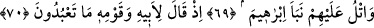
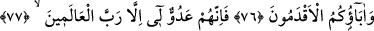
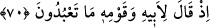
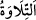
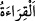

NEYE TAPTIĞINIZI
DÜŞÜNDÜNÜZ MÜ?
69. (Rasûlüm!) Onlara İbrahim’in haberini de naklet. (Oku!)
70. Hani o, babasına ve kavmine: Neye tapıyorsunuz? demişti.
71. “Putlara tapıyoruz ve onlara tapmaya devam edeceğiz” diye cevap verdiler.
72. İbrahim dedi ki: Peki, yalvardığınızda onlar sizi işitiyorlar mı?
73. Yahut size fayda ya da zarar verebiliyorlar mı?
74. Şöyle cevap verdiler: Hayır, ama biz babalarımızı böyle yapar bulduk.
75. İbrahim dedi ki: İyi ama, neye taptığınızı (biraz olsun) düşündünüz mü?
76. “İster siz , ister eski atalarınız”
77. İyi bilin ki onlar benim düşmanımdır; ancak âlemlerin Rabbi (benim
dostumdur);
“ düzgün ve güzel edâ (tetâbu) ile okumak demektir. “ daha geneldir. Yâni
müşrik Araplara oku ve Mekke halkına İbrâhim’in şânı yüce/çok önemli haberini bildir.
Kâşifî der ki: “Müşrik Arapların kendilerini nisbet ettikleri ve evlâdlarından olmakla
iftihâr ettikleri ve dayandıkları İbrahim (a.s.)’ın haberini oku.”
70. Hani o, babasına ve kavmine: “Neye tapıyorsunuz?” demişti.
“Hani o, babasına” Âzer’e -ki daha önce de geçtiği gibi onun asıl adı Tarah idi- “ve
kavmine:” Bâbil halkına: “Neye” hangi şeye “tapıyorsunuz?” sizin tapmakta
olduğunuz şey nedir? “demişti.”
Bâbil, Irak’ta bir yerdir, sihir ilmi oraya nisbet edilir. “ kelimesinin asıl anlamı,
kelimesinin asıl anlamı,
kadınlar olmaksızın sadece erkeklerden oluşan topluluktur. Nitekim Allah Teâlâ’nın: